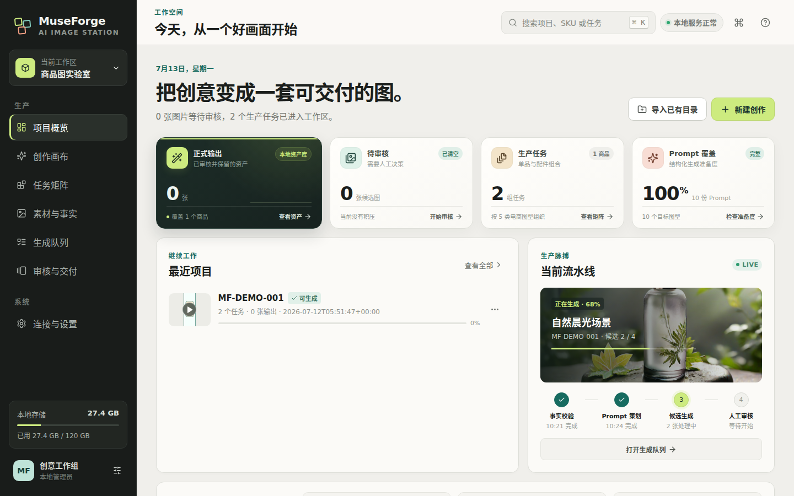
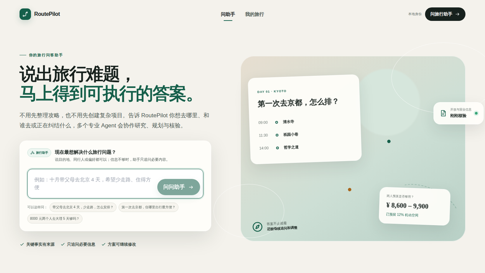

01
开源可访问

ModelPort
面向 Claude Code / VS Code Claude 的本地 Anthropic-compatible 模型网关，带 Dashboard 控制面，覆盖 Provider 路由、模型库存、API Key、用量成本和健康观测。
面向 Claude Code / VS Code Claude 的本地 Anthropic-compatible 模型网关，带 Dashboard 控制面，覆盖 Provider 路由、模型库存、API Key、用量成本和健康观测。

本地优先的 Temu 核价生图工作台，串联 SKU 数据、素材证据、提示词版本管理、候选抽卡、人工审核、QA 和最终包追溯。

面向量化投研的数据工作台，覆盖自然语言任务、真实行情数据、策略平台、评测记录、工具执行、日志和运维治理。

本地优先的电商 AI 图像生产工作站，把商品事实、参考图、五类商品图任务、批量生成、候选审核和画布精修组织成可追踪的生产链。

面向初创公司和小团队的轻量经营管理系统，统一收入、成本、预算、票据、税务、人员薪酬和生产运维。

Artifact-first 多 Agent 旅行决策工作台：先用带来源的快速问答解决真实问题，再把约束、证据、规划、校验与正式方案沉淀为版本化 Artifact。